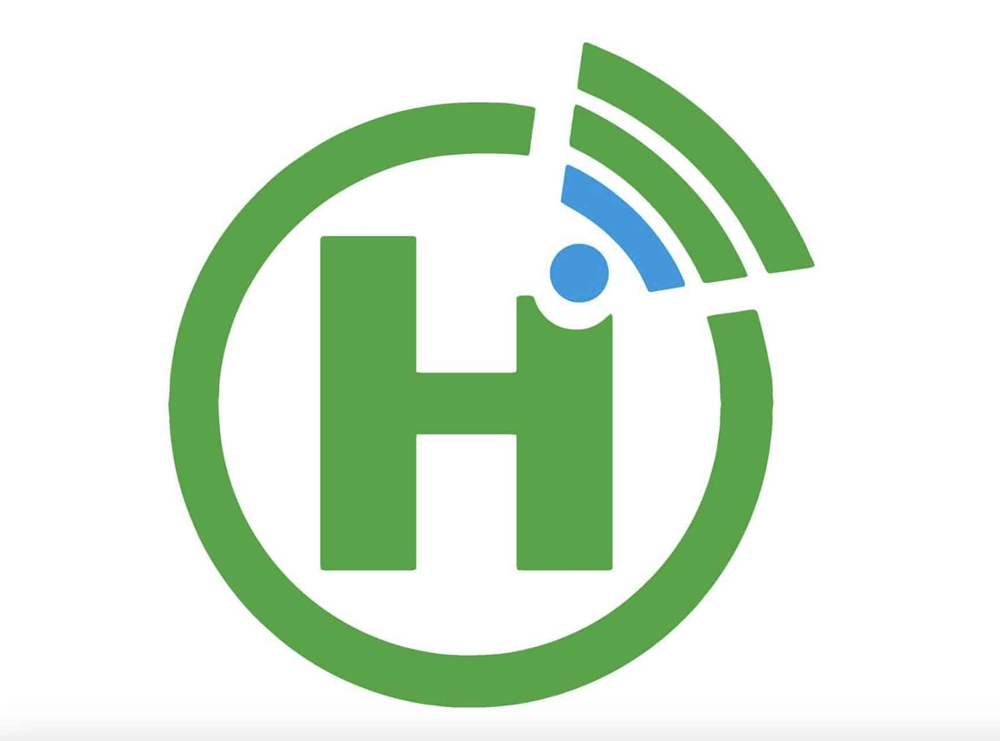

Home Bage About servace contact

servace
Halkan waa adeegyada ugu waaweyn ee ay bixiso Hormuud:
📞 1. Wicitaanno & SMS
- liWicitaanno gudaha iyo dibaddaliWicitaanno>
- SMS degdeg ah oo la isku halayn karo
- Xirmooyin (bundles) qiimo jaban
🌐 2. Internet 4G/5G
Internet xawaare sare leh
Xirmooyin maalinle, toddobaadle & bille
Ku shaqeeya mobile iyo router
🏢 3. Fiber Internet
Internet aad u xawaare badan
Ku habboon guryaha, shirkadaha & hay’adaha
Xasillooni iyo adeeg joogto ah
💳4. EVC Plus (Mobile Money)
Lacag diris & qaadasho
Bixinta biilasha (koronto, biyo, iwm)
Iibsashada adeegyo iyo online payments
Ku shaqeeya si fudud mobile-ka
🏦 5. Adeegyada Ganacsiga (Business Solutions)
Internet gaar ah shirkadaha
Xalal IT & Network
Adeegyo lacag bixin digital ah
📡 6. Roaming & International Services
Adeeg roaming marka dibadda la joogo
Wicitaanno caalami ah